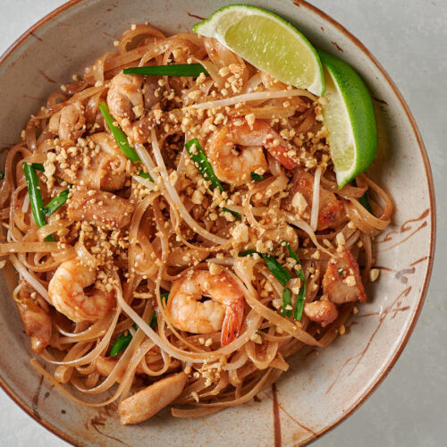

Pad Thai

Description
Take the classic pad Thai to new levels, adding king prawns and tofu, pickled turnip and tamarind paste -
a dish for two that's packed with flavour
Ingredients
- 200g dried flat rice noodles
- 2 tbsp tamarind paste
- 3 tbsp fish sauce
- 1 tbsp light brown soft sugar
- 1 lime , half juiced, half cut into wedges to serve
- pinch chilli powder (optional)
- 4 tbsp sunflower oil
- 100g firm tofu , diced
- 200g raw king prawns, butterflied
- 100g beansprouts
- 2 eggs
- 100g salted roasted peanuts, chopped
- 2 spring onions, shredded
- 2 tbsp chopped pickled turnip (preserved radish)
- soy sauce, to serve
Method
- Soak the noodles in warm water for about 20 mins until softened but with plenty of bite,
then drain. Meanwhile, mix together the tamarind paste, fish sauce,
sugar and lime juice until the sugar dissolves.
Season with a pinch of chilli powder if you like it spicy.
Can be made up to two weeks ahead and kept in the fridge.
If you make pad Thai regularly, double the quantity and keep half.
- Heat half the oil in a frying pan and cook the tofu on each side until golden.
Add the prawns and fry until they just start to turn pink.
Tip the noodles into the pan and drizzle over the tamarind mixture with about 5 tbsp of water.
Stir everything together and cook over a high heat for 3 mins until the noodles are just cooked.
Add a splash more water if
- When the sauce has reduced, scatter over the beansprouts and fold them into the noodles.
Push everything to one side of the pan, then pour in the rest of the oil on the empty side and crack in the eggs.
Fry for 2 mins until the white is just set and beginning to crisp around the edges, then roughly scramble the runny yolks in with the whites.
When the eggs have just set, combine with the noodles.
- Scatter over half of the peanuts, half the spring onion and all the turnip,
and quickly toss together. Divide between two plates with the remaining peanuts, spring onion,
chilli powder, lime wedges and soy sauce on the side, to garnish as preferred.